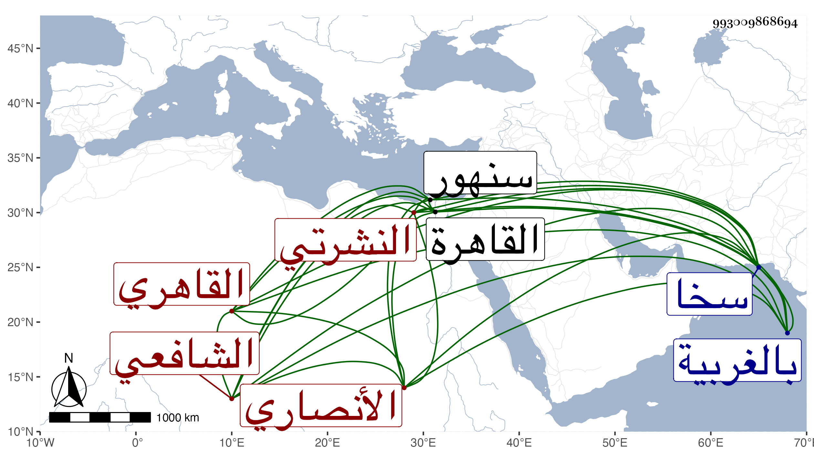

0902Sakhawi.DawLamic.ITO20230111-ara1.EIS1600.993009868694
Biography ID: 993009868694
26
أحمد بن علي بن أحمد بن علي بن عبد المغيث بن فضل الشهاب أبو العباس الأنصاري النشرتي الأصل نسبة لنشرت بالغربية بالقرب من سخا وسنهور القاهري الشافعي الآتي والده وولده محمد ويعرف بالنشرتي . ولد في مستهل ربيع الأول سنة تسعين وسبعمائة بالقاهرة ونشأ بها فقرأ القرآن على أبيه وصلى به في رمضان سنة اثنتين وثمانمائة والعمدة والتنبيه والشاطبية وغيرها ، وعرض على الزين العراقي وولده والهيثمي والكمال الدميري والزين الفارسكوري والبرشنسي وأبي الحسن بن الملقن في آخرين منهم ممن لم أر في كتابتهم التصريح بالإجازة البلقيني وغيره وابنه الجلال والصدر المناوي ، وتلا بالسبع على الشهاب بن هاشم والزراتيتي واشتغل بالفقه على السيد النسابة وهو من أوائل من قرأ عليه وغيره وتكسب بإقراء المماليك بالطباق السلطانية وبتلاوة الأجواق ورافق ابن الركاب في ذلك وقتا وصار بأخرة يكرهها لما فيها من التمطيط وشبهه ولذا تركها وحج في سنة ثمان وأربعين وجاور وتلا بعض القرآن هناك بالسبع على ابن عياش ومحمد الكيلاني وحضر الإيضاح للنووي عند الجلال البكري وكان صالحا خيرا كثير التلاوة والتسبيح والتهجد وإدمان الصوم واستمر على الطريق الحسنة حتى مات في أواخر ذي الحجة سنة ستين رحمه الله وإيانا .
